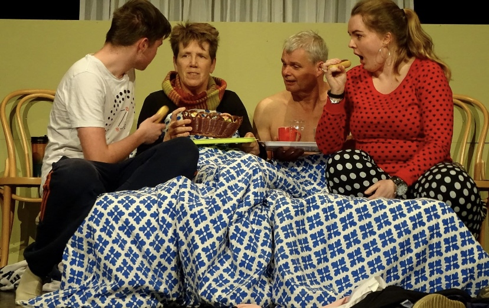

Eerder gespeelde stukken
2019
De Lokroep van de Walvis
Tekst volgt.
2018
Happy Family
‘Happy Family’ vertelt het verhaal van broer Jan en zus Sjoukje de Bruin, hun kinderen, aanhang en verloren gewaande familieleden. De titel staat niet voor niets tussen aanhalingstekens. Zoals in iedere familie heeft eenieder zo zijn eigen besognes, zijn er geheimen, gedoe met geld, intriges en zwarte schapen. Geschreven door Doet Velthuis
2017
Vreemde Veugels
Tekst volgt.